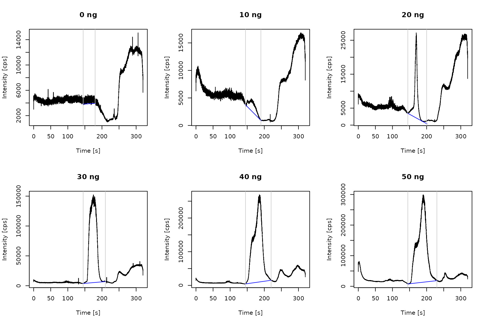
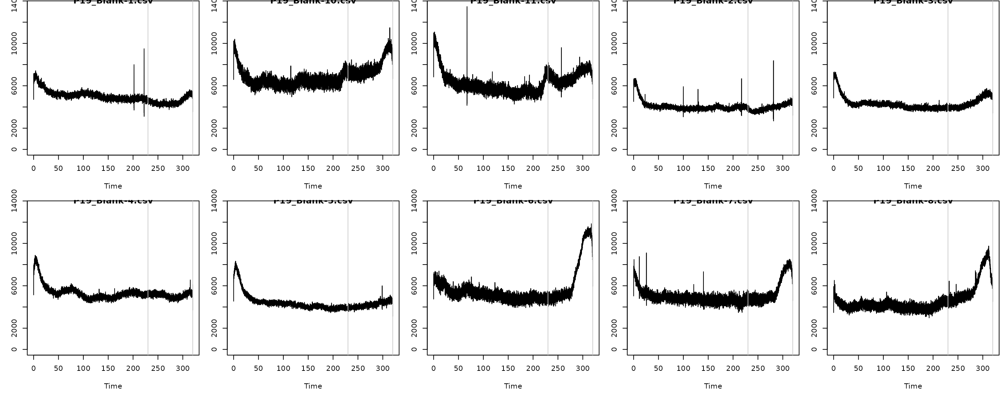

External calibration (ExtCal) workflow
Vera Scharek and Jan Lisec
Source:vignettes/wf_ExtCal.Rmd
wf_ExtCal.RmdIntroduction to External Calibration
External calibration with dried liquid standards, matrix-matched standards or reference materials is a common approach for calibrating transient signal from ETV/ICP-MS and -OES measurements. Most ETV time scans do not exceed two peaks per analyte. However, matrix influences on the acquired isotope or emission line might lead to signal splitting or an uneven background signal, where peak detection algorithms fail and manual peak identification is necessary. On the other hand, co-vaporization of analyte and matrix components alternates the plasma and thus the signal response. The use of an internal standard allows to correct for non-linearity and enables accurate analysis.
As an example, we provide the data of fluorine measurements included in [paper].
Calibration data
Import
Currently, the import of ICP-MS raw data from four different instrument types is supported. Additionally, .csv-file from Spectro ICP-OES instruments can be read in. As an example for the external calibration workflow, we provide .csv-files aquired via an Agilent triple quadrupole instrument. The output data.frame consists of a time column and additional intensity columns.
library(ETVapp)
wf <- "ExtCal"
td <- ETVapp::ETVapp_testdata[[wf]]
cali_imp <- td[["Cali"]]
str(cali_imp[1:3])
#> List of 3
#> $ P19_256_0_mug.csv :'data.frame': 10491 obs. of 2 variables:
#> ..$ Time: num [1:10491] 0.0513 0.0818 0.1123 0.1428 0.1733 ...
#> ..$ 157 : num [1:10491] 3734 4708 4780 4403 5298 ...
#> $ P19_256_10_mug.csv:'data.frame': 10491 obs. of 2 variables:
#> ..$ Time: num [1:10491] 0.0513 0.0818 0.1123 0.1428 0.1733 ...
#> ..$ 157 : num [1:10491] 8898 8672 8191 8145 8326 ...
#> $ P19_256_20_mug.csv:'data.frame': 10491 obs. of 2 variables:
#> ..$ Time: num [1:10491] 0.0513 0.0818 0.1123 0.1428 0.1733 ...
#> ..$ 157 : num [1:10491] 8291 8607 9275 7472 8505 ...Data processing
ETVapp provides options for data processing prior to peak evaluation through two algorithms, internal standardization and Savitzky-Golay smoothing, respectively. Internal standardization requires two columns from the input data.frame which need to be determined as analyte and standard column. The smoothing function is directed by the parameter filter length fl which should be an odd integer >=3. Omitting the smoothing step can be achieved by setting fl = NULL.
time_col <- "Time"
int_col <- "157"
cali_pro <- process_data(data = cali_imp, c1 = int_col, fl = 9, wf = wf)
str(cali_pro[1:3])
#> List of 3
#> $ P19_256_0_mug.csv :'data.frame': 10491 obs. of 2 variables:
#> ..$ Time: num [1:10491] 0.0513 0.0818 0.1123 0.1428 0.1733 ...
#> ..$ 157 : num [1:10491] 2995 4416 5146 4637 4722 ...
#> $ P19_256_10_mug.csv:'data.frame': 10491 obs. of 2 variables:
#> ..$ Time: num [1:10491] 0.0513 0.0818 0.1123 0.1428 0.1733 ...
#> ..$ 157 : num [1:10491] 6261 8808 9103 7804 8427 ...
#> $ P19_256_20_mug.csv:'data.frame': 10491 obs. of 2 variables:
#> ..$ Time: num [1:10491] 0.0513 0.0818 0.1123 0.1428 0.1733 ...
#> ..$ 157 : num [1:10491] 6156 8846 9315 8104 8063 ...Peak evaluation
Prior to peak integration, the peak boundaries need to be defined either manually or via a simple algorithm based on a given minimum peak height. Modified polynomial fitting is implemented for estimating the baseline. Therefore, an excerpt of the pre-processed data is evaluated to avoid impact of signal fluctuations. The time window can be adjusted through the correction factor cf which determines the number of data points used around the detected peak. By default, a linear fitting will be computed.
However, the parameter deg allows the use of specified
degrees of polynomial fitting. In our example, we opted for a manual
peak definition due to additional signals present in the time scan. Peak
data is collected in a data.frame and information on the
analyte mass are transferred through the function
tab_cali().
ps <- rep(145, length(cali_pro))
pe <- seq(180, 230, length.out=length(cali_pro))
cf <- 50
cali_peaks <- get_peakdata(
cali_pro,
int_col = int_col,
PPmethod = "Peak (manual)",
peak_start = ps,
peak_end = pe
)
cali_peaks <- tab_cali(peak_data = cali_peaks, wf = wf, std_info = seq(0,50,10))
gt::gt(cali_peaks)| Isotope | Start [s] | End [s] | Area [cts] | BLmethod | Analyte mass [pg] |
|---|---|---|---|---|---|
| 157 | 145 | 180 | 22769.77 | modpolyfit | 0 |
| 157 | 145 | 190 | 46895.40 | modpolyfit | 10 |
| 157 | 145 | 200 | 209828.40 | modpolyfit | 20 |
| 157 | 145 | 210 | 3468927.98 | modpolyfit | 30 |
| 157 | 145 | 220 | 7162789.43 | modpolyfit | 40 |
| 157 | 145 | 230 | 8217598.39 | modpolyfit | 50 |
Generate baseline data.
cali_BL <- lapply(1:length(cali_pro), function(i) {
flt <- (min(which(cali_pro[[i]][,time_col]>=ps[i]))-cf):(max(which(cali_pro[[i]][,time_col]<=pe[i]))+cf)
ETVapp:::blcorr_col(
df = cali_pro[[i]][flt, c(time_col, int_col)],
nm = int_col,
BLmethod = "modpolyfit",
rval = "baseline",
amend = "_BL"
)
})The following code will plot the processed time scans of the selected calibration standards. The grey vertical lines mark the peak integration range. The baseline is drawn in [color].
par(mfrow=c(2,3))
for (i in 1:6) {
plot(cali_pro[[i]], type="l",
ylab = "Intensity [cps]", xlab = "Time [s]", main = paste(cali_peaks[i,6], "ng"))
lines(x = cali_BL[[i]][,c(time_col)], y = cali_BL[[i]][,3], col = "blue")
abline(v=cali_peaks[i,2:3], col=grey(0.8))
}
Peak areas are plotted against the analyte mass. Calibration parameter obtained through linear regression are provided as output data.frame.
cm <- calc_cali_mod(df = cali_peaks[,c(6,4)], wf = wf)
par(mfrow=c(1,1))
plot(cali_peaks[,c(6,4)])
abline(a = cm[1,3], b = cm[1,1])
gt::gt(cm)| Slope [cts/pg] | Slope error [cts/pg] | Intercept [cts] | Intercept error [cts] | R square |
|---|---|---|---|---|
| 187374.1 | 34823.3 | -1496217 | 1054328 | 0.8786115 |
Sample analysis
File import, data processing and peak evaluation of the sample measurement is accomplished similar to the calibration measurements.
smpl_pro <- process_data(data = td[['Sample']][[1]], c1 = int_col, fl = 9, wf = wf)
smpl_peak <- get_peakdata(smpl_pro, PPmethod = "Peak (manual)", BLmethod = "none", int_col = int_col, time_col = time_col, peak_start = 230, peak_end = 320)
gt::gt(smpl_peak)| Isotope | Start [s] | End [s] | Area [cts] | BLmethod |
|---|---|---|---|---|
| 157 | 230 | 320 | 889621.4 | none |
The following code plots the sample time scan with the peak boundaries.
par(mfrow=c(1,1))
plot(smpl_pro, type="l", ylab = "Intensity [cps]", xlab = "Time [s]", main = "Sample")
abline(v=smpl_peak[1,2:3], col=grey(0.8))Compute sample result based on the calibration model with the following code. The input of a mass fraction allows for result calculation if the elemental composition of the analyte is not fully captured by the acquired element,e.g. Sn in organo tin compounds or C in micro plastics.
gt::gt(tab_result(
smpl_peak,
a = cm[1,3],
b = cm[1,1],
wf = wf,
mass_fraction2 = 1,
sample_mass = 1
))| Isotope | Start [s] | End [s] | Area [cts] | BLmethod | Analyte mass as element [pg] | Sample mass [mg] | Content as element [ppb] |
|---|---|---|---|---|---|---|---|
| 157 | 230 | 320 | 889621.4 | none | 12.73302 | 1 | 12.73302 |
Limits of detection and quantification
Blank measurements are imported, processed and plotted as follows. Data treatment analog to the sample data is recommended.
blnk_pro <- process_data(data = td[['Blanks']], c1 = int_col, fl = 9, wf = wf)
blnk_pro <- blnk_pro[str_sort_num(names(blnk_pro))]
par(mfrow=c(1,1))
plot_spec(mi_spec = blnk_pro[1:6], c1 = "157", opt = "overlay_legend")
abline(v=smpl_peak[1,2:3], col=grey(0.8), lwd=3)
For estimating the limit of detection (LOD) and quantification (LOQ) according to the blank value method, integrate the blank signals in the peak time window.
blnk_peaks <- get_peakdata(
blnk_pro,
int_col = int_col,
time_col = time_col,
BLmethod = "none",
peak_start = smpl_peak[,2],
peak_end = smpl_peak[,3]
)
gt::gt(blnk_peaks)| Isotope | Start [s] | End [s] | Area [cts] | BLmethod |
|---|---|---|---|---|
| 157 | 0.05198 | 320.0285 | 1591587 | none |
| 157 | 0.05111 | 320.0276 | 1294937 | none |
| 157 | 0.05199 | 320.0285 | 1389711 | none |
| 157 | 0.05102 | 320.0275 | 1704857 | none |
| 157 | 0.05157 | 320.0280 | 1409494 | none |
| 157 | 0.05088 | 320.0274 | 1834430 | none |
| 157 | 0.05102 | 320.0275 | 1638883 | none |
| 157 | 0.05106 | 320.0275 | 1486251 | none |
| 157 | 0.05117 | 320.0276 | 1814962 | none |
| 157 | 0.05211 | 320.0286 | 2214883 | none |
| 157 | 0.05206 | 320.0285 | 2029298 | none |
The LOD and LOQ are estimated as three and ten times the standard deviation of the blank values divided by the slope of the linear calibration curve. At least three input values are required for statistical evaluation. Less than the recommended 10 entries will still give a result. The input of a theoretical sample mass will compute the LOD and LOQ per sample mass.
gt::gt(tab_LOX(
x = blnk_peaks[,4],
cali_slope = cm[1,1],
wf = wf,
mass_fraction2 = 1,
sample_mass = 1
))| LOD as element [pg] | LOQ as element [pg] | Sample mass [mg] | LOD per sample mass [ppb] | LOQ per sample mass [ppb] |
|---|---|---|---|---|
| 4.53728 | 15.12427 | 1 | 4.53728 | 15.12427 |